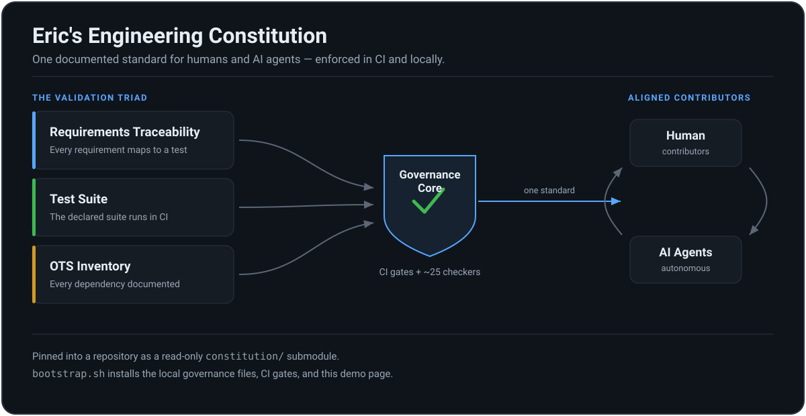

About this page. It runs entirely in your browser — no server, no network, nothing to install. The command output shown below is illustrative: a scripted example of what each checker prints, not a live run against your machine.
What it is
A set of engineering principles, an AI-agent workflow, and ~25
shell checkers, pinned into a repository as a read-only
constitution/ Git submodule. Every project that
adopts it answers to one documented standard instead of each
author's habits.
Why it exists
AI agents accelerate development and just as easily skip tests, let documentation rot, or leak a secret. The constitution turns "please remember to" into gates: a pull request that drifts from the standard fails CI before a human has to notice.

assets/diagrams/.The compliance validation triad
Three automated legs keep a change honest: requirements trace to tests, the declared test suite actually runs, and every third-party dependency is inventoried. Each is a checker that fails CI when the standard slips.
Requirements traceability matrix
Maps stable requirement IDs (for example FR-012) to the tests that verify them. CI blocks a change that leaves a requirement unverified.
$ bash constitution/scripts/check_traceability.sh . scanning docs/PRODUCT_REQUIREMENTS.md for requirement IDs ... found 12 functional requirements (FR-001 .. FR-012) reconciling against docs/REQUIREMENTS_TRACEABILITY.md ... [OK] FR-001 -> tests/test_auth.py::test_login_lockout [OK] FR-012 -> tests/test_processor.py::test_regression [OK] every requirement maps to a verifying test.
Illustrative output.
Declared test-suite enforcement
CI runs run_declared_tests.sh, which executes the exact test command the project declares in docs/TEST_PLAN.md. A failure blocks the merge.
$ bash constitution/scripts/run_declared_tests.sh . found test plan: docs/TEST_PLAN.md declared runner: "pytest -q" executing ... ..... 45 passed in 11.3s [OK] declared suite succeeded; exit 0.
Illustrative output.
OTS software inventory & risk review
Every runtime, database, and library is recorded in docs/OTS_SOFTWARE.md. check_ots_inventory.sh flags a dependency added to a manifest but missing from the inventory.
$ bash constitution/scripts/check_ots_inventory.sh . parsing root manifests: pyproject.toml, package.json ... comparing declared packages to docs/OTS_SOFTWARE.md ... [OK] fastify -> OTS-002 (4.21.0, risk: medium) [MISSING] left-pad -> not in OTS inventory 1 undocumented dependency; add it before merge.
Illustrative output — the failing case is what the gate is for.
Why a triad, and why these three
The three legs are the failure modes that quietly erase trust in a codebase: work that no test covers, a suite that nobody actually runs, and a dependency nobody vetted. Each is cheap to skip under deadline and expensive to discover in production.
Making each a checker turns the standard into a fact CI can assert, rather than a habit that depends on who reviewed the pull request. The shape is borrowed from regulated-software practice (FDA-style traceability, an SOUP-informed OTS register) applied to ordinary repositories.
See it work
A few real surfaces of the framework. Code is themed Solarized Dark —
one canonical palette, the same on screen and in any printed brief —
because the constitution asks every repository to present code that
way (DOCUMENTATION.md, "Code Snippets in Rendered
Documentation").
Adopt it in one command
bootstrap.sh adds the submodule and the local governance files, and never overwrites what is already there.
$ ./scripts/bootstrap.sh /path/to/project https://github.com/you/constitution.git adding constitution/ submodule ... installing AGENTS.md, CLAUDE.md, CI workflows, demo.html ... wrote .constitution-bootstrap/adoption-report.md [OK] 12 governance files created; existing files left untouched.
Illustrative output.
The one checker that reads your code's shape
A repository can carry every governance file and still have its domain layer importing its database. check_architecture.sh resolves imports against the layer table you declare and fails when a dependency points outward.
# docs/ARCHITECTURE.md — the declared layer table | layer | directory | may depend on | | -------- | ------------ | ------------------ | | domain | src/domain | (nothing) | | usecases | src/app | domain | | adapters | src/adapters | usecases, domain | $ bash constitution/scripts/check_architecture.sh . resolving imports against the declared layer table ... [FAIL] src/domain/order.py imports src/adapters/db (domain -> adapters is outward) Dependency Rule violated: 1 inward-pointing rule broken.
Illustrative output.
Every push ends with a Next Steps procedure
Each handoff and pull request closes with a numbered checklist, every step tagged, and the steps only a person can do named first (ADR-0005). check_next_steps.sh verifies its shape.
#### Next Steps 1. [ ] HUMAN — Tag v1.55.0 and publish the GitHub release Why a human: remote sessions cannot push tags or publish releases. Done when: gh release list shows v1.55.0 as Latest. 2. [ ] AGENT — Re-pin adopter submodules via bump_adopters.sh 3. [ ] AUTOMATED — tests.yml runs the suite + self-governance on the PR
Illustrative excerpt.
Why Solarized Dark, specifically
It is Principle 12 (follow the platform's canonical conventions) applied to code presentation. Solarized is a published palette with fixed hex values and a designed relationship between them, so "the code blocks are Solarized Dark" is a reviewable fact, not one person's taste.
The colors are pinned independent of the page chrome on purpose: code is read as code in every context, and a snippet that re-themes itself with the surrounding page is one a reader has to re-learn on each visit. The spans above are emitted at build time, never by a highlighter loaded from a CDN — a single-file page forbids the network, exactly as the product would.
The 12 core principles
The whole standard in twelve lines. Open any one for the code smell it guards against and the guardrail it requires.
Interactive workflow simulator
Step through the checkpoints an AI agent clears on a single change — from the session-start compliance hook to clearing the session plan at the end.
The session-start hook checks the constitution/ submodule against the latest release. If it lags, remediation steps are injected into the agent's context before any work begins.
Before editing code, the agent records goals, approach, file boundaries, and risks — a recovery point if the session is interrupted.
Edits land, then run_declared_tests.sh executes the project's own declared test command to catch regressions locally.
check_secrets.sh scans tracked and untracked files for credential shapes and high-confidence patterns, blocking the push if one is found.
Changes are recorded in the changelog and TODO, the handoff ends with a Next Steps procedure, and the session plan is cleared for the next session.